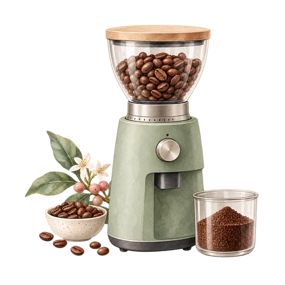
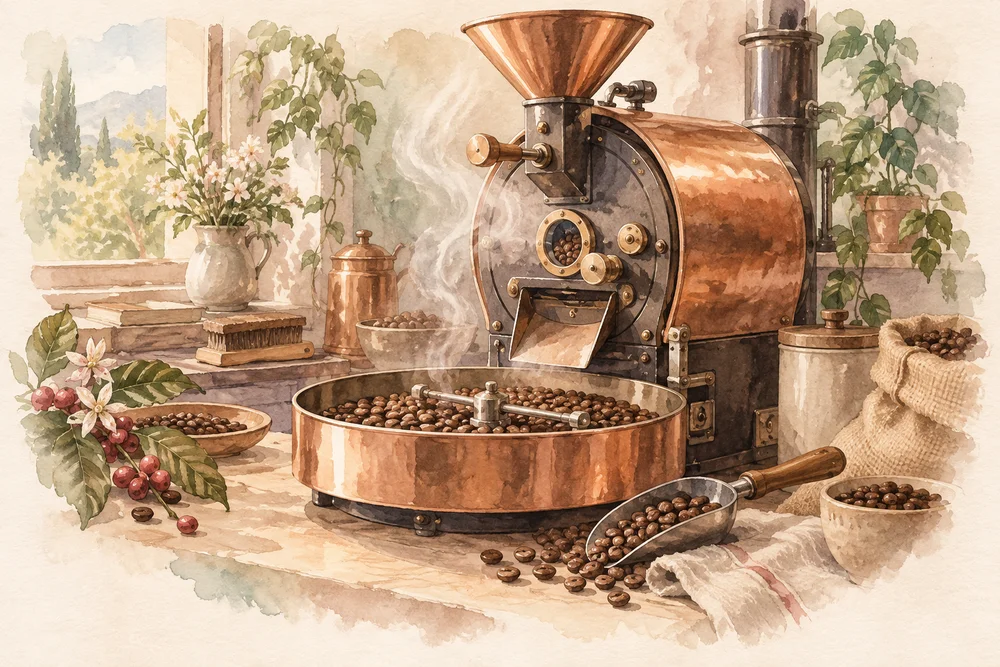
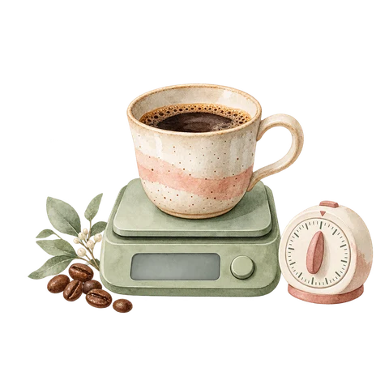
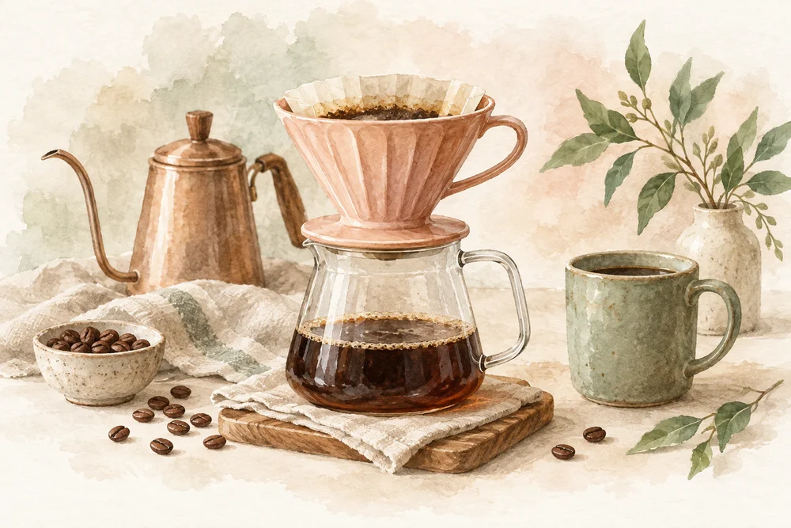
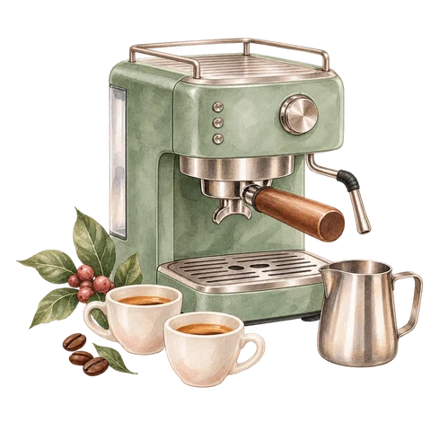

Grinder
A consistent grinder improves sweetness, clarity, and repeatability more than most brewing accessories. Compare burr geometry, retention, alignment, noise, serviceability, and real brew results.
Equipment guide
Choose tools that make your daily brew easier.


A consistent grinder improves sweetness, clarity, and repeatability more than most brewing accessories. Compare burr geometry, retention, alignment, noise, serviceability, and real brew results.

Measure dose, water, yield, and brew time. This makes recipes repeatable and troubleshooting possible.

A steady kettle helps pouring. Dripper shape and filters change drawdown, body, bypass, and clarity.

Prioritize temperature stability, pressure consistency, parts availability, cleaning access, and technician support.
Evaluation checklist